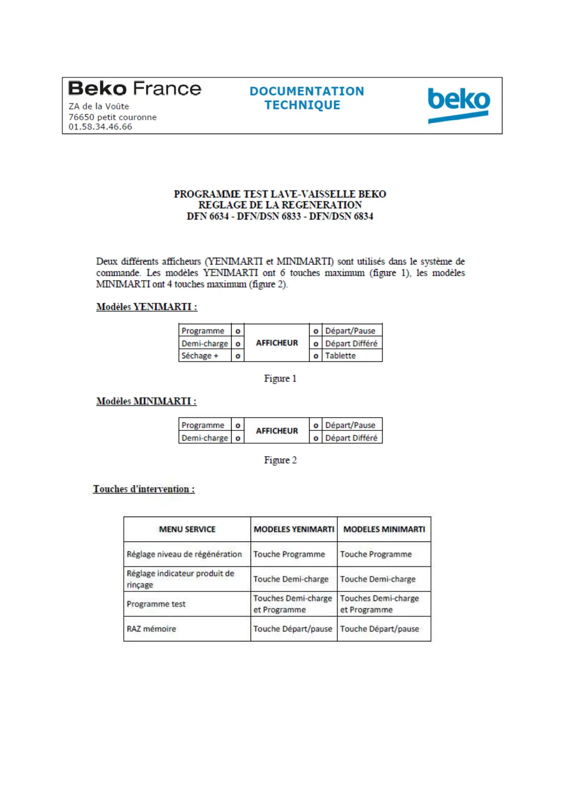
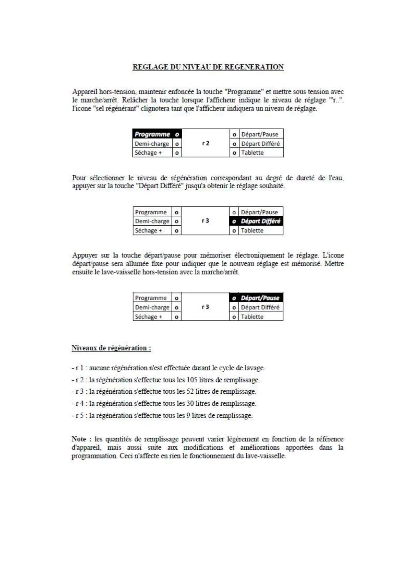
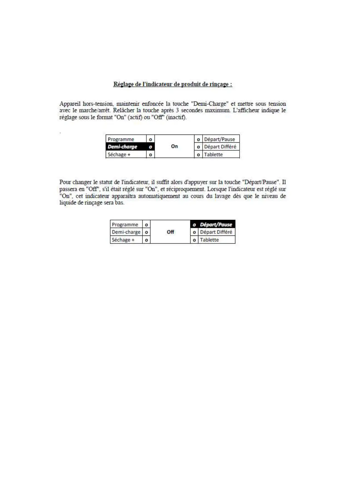
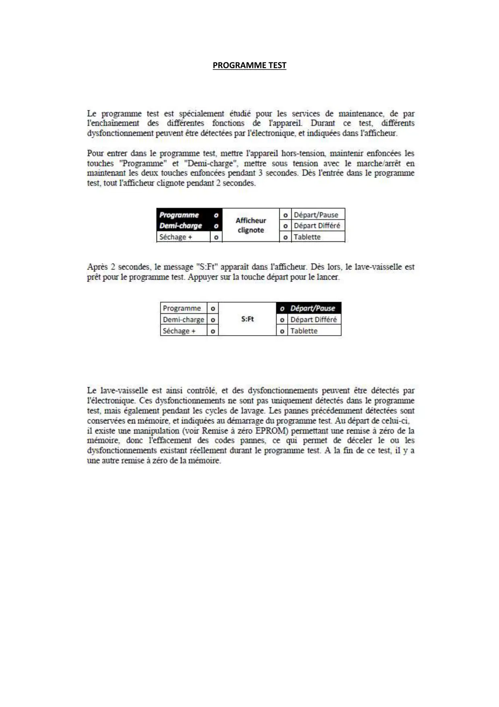
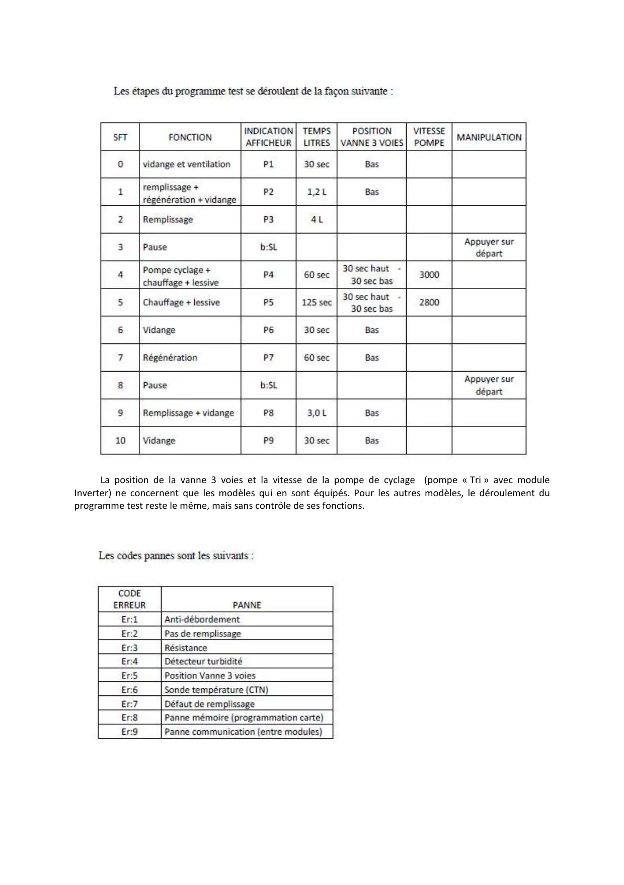

Progr.Test.lave vaisselle Yeni Minimarti

1 / 6
2 / 6
3 / 6
PROGRAMME TEST
4 / 6
La position de la vanne 3 voies et la vitesse de la pompe de cyclage (pompe « Tri » avec moduleInverter) ne concernent que les modèles qui en sont équipés. Pour les autres modèles, le déroulement duprogramme test reste le même, mais sans contrôle de ses fonctions.
5 / 6